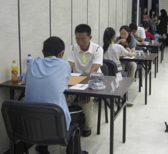

亮比赛时
#1 亮比赛时作者：茗弈小刀 发表时间：2009-5-29 21:59:25

傅亮---具有大智慧的人，由于丸子这次有事未能去比赛，亮作为江苏领队，果然不负众望。到目前为止，江苏一二队都取得了不错的成绩，愿明天最后关头，继续加油！发挥最好状态！
#2 Re:亮比赛时作者：百医天使 发表时间：2009-5-29 22:18:04
大亮运气比较好，
不像去年江苏最后三轮碰的什么队呀，今年好多了，呵呵！
当然，亮和仇的那盘的确是运气好，
#3 Re:亮比赛时作者：罗马王子 发表时间：2009-6-2 9:04:23
晕！应该是大家共同努力的结果。1队前3台发挥的很好，关键时刻力挽狂澜。说实话，我这次状态很不好，该赢的棋没赢，不该输的棋还输了，拖了1队的后腿。。。需要自我检讨一下！#4 Re:亮比赛时作者：茗弈小刀 发表时间：2009-6-2 10:18:23
大亮同学胜不骄，败不馁的精神值得大家学习！写个比赛总结吧亮。